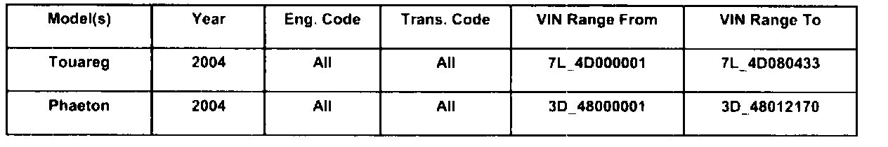
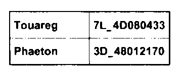
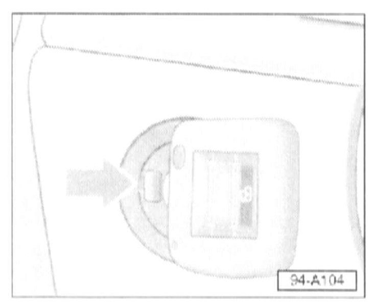
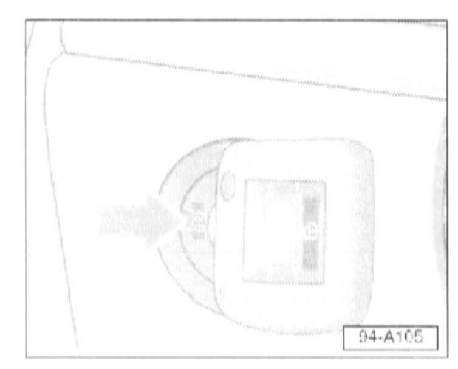

Ignition Key - Emergency Release Procedure
94 06 22Dec. 11, 2006
2010565 Supersedes T.B. Group 94 number 04-03 dated November 19, 2004 due to inclusion into ElsaWeb

Vehicle Information
Condition
Ignition Key, Emergency Release Revision
In the event a customer contacts your dealership requesting assistance with ignition key emergency release, the following procedure describes proper steps for key removal.
Technical Background
Vehicle owner's manual omits "Apply parking brake" step from ignition key emergency release procedure
Production Solution
No production change required
Service

Vehicles built up to the VINs shown.
Vehicles built after above VINs do not have this emergency release feature.

^ Switch ignition OFF
^ Move transmission selector lever to "P" (Park)
^ Fully engage parking brake.
^ Remove cover -arrow- if equipped.

^ Press emergency release button -arrow- using pen or similar tool
^ With emergency release button pressed down, turn ignition key counterclockwise and remove.
Warranty
Information only.
Required Parts and Tools
No Special Parts required. Always see ETKA for the latest part(s) information.
No Special Tools required.